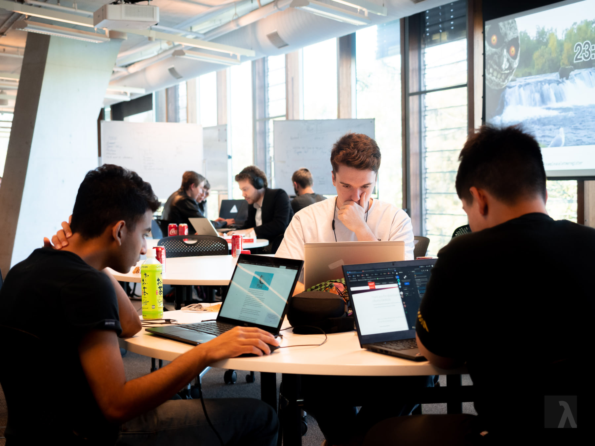
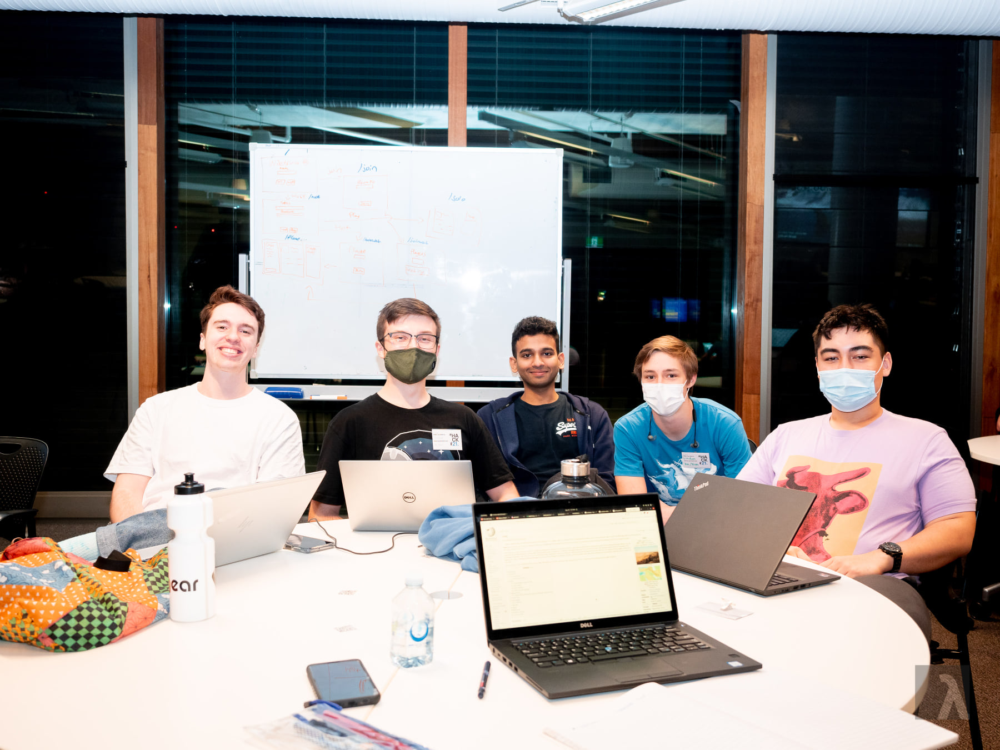
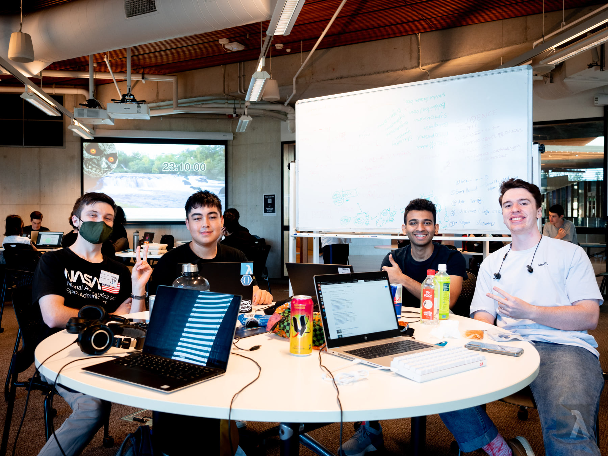

The Hackathon
For the UQ Computing Society (UQCS) Hackathon, my team consisting of some old friends (Bobby Melhem, Chase Dart and Connor Raggatt), and one tagalong (Yash Talekar), decided to build a trivia question generator using Wikipedia articles. As the developer with the most experience in web development, honestly not all that much but still more than the others, I built out our Flask web app, HTML pages, Javascript scripts and all the game logic. Yash Talekar helped me with this also. All the other team members worked on building a trivia question generator. Bobby Melhem helped me hook up the generator to my game system, and then we were done. Connor Raggatt was the idea man for this project, and Chase Dart helped implement the question rejection function for generating questions.
The app was created in Python 3 with Flask and Python-SocketIO. To serve static files a REST API was setup with Flask, and to implement game communications SocketIO was used. The question generator performed basic natural language processing using a number of Python libraries such as Numpy and Pandas. We used a Wikipedia API wrapper to poll pages nested within category pages, then we used NLP to remove the article name from the first paragraph of the article. We then performed checking to confirm whether or not the question was good. Finally Google Trends was used to find similar objects that could be used as fake answers, there was quality checking done here.
This was a really fun experience and I now regret not getting involved in Hackathons sooner.
Repository: Here
-James Robins
Team Pictures!
Left to right: Yash, Chase, James
Left to right: Chase, Connor, Yash, Linden (a spy from another team), James
Left to right: Connor, James, Yash, Chase